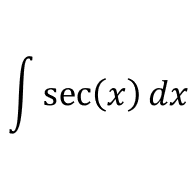
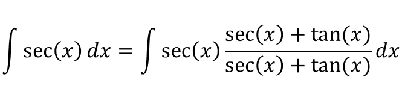
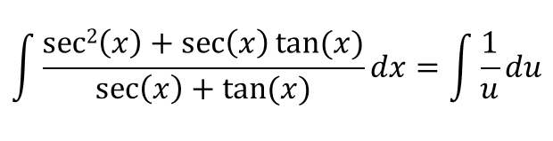
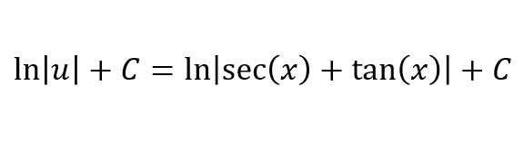

This is the integral we want to evaluate is:
Let's multiply the numerator and denominator by [sec(x)+tan(x)]:
Lets say [u = sec(x) + tan(x)], which means [du/dx = sec(x)tan(x) + sec2(x)]:
If we evaluate the integral:
For \(cosec(\theta)\), let's multiply the the numerator and denominator by \(cosec(\theta)-cotan(\theta)\):
Since \(\left(cosec(\theta)+cotan(\theta)\right)' = cosec(\theta) \left( cosec(\theta)-cotan(\theta)\right)\), we should use the substitution rule and let \(u = cosec(\theta)+cotan(\theta)\), and that means \(du = cosec(\theta) \left( cosec(\theta)-cotan(\theta)\right) d\theta\):
If we evaluate the integral: